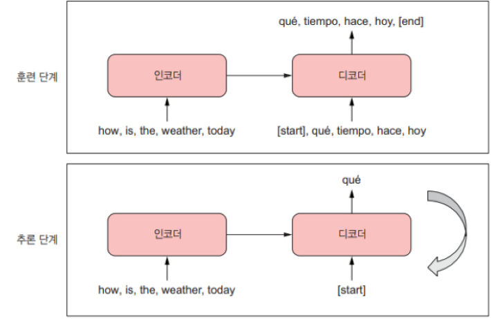

IPCG 랩 격주 세미나에서 케라스 창시자에게 배우는 딥러닝의 Transformer 파트의 일부를 발표함.
금일 발표는 코드 예시를 위주로 돌았으며, 각각의 코드가 무엇을 의미하는지를 이해하여야 함
케라스에서 시퀀스-투-시퀀스 모델이 어떻게 동작하는지 알아보았다.
inputs = keras.Input(shape=(sequence_length, ), dtype="int64")
x = layers.Enbedding(input_dim=vocab_size, output_din=128)(inputs)
x = layes.LSTM(32, return_sequence=True)(x)
outputs = layers.Dense(vocab_size activation='softmax')
model = keras.Model(inputs, outputs)
inputs = keras.Input(shape=(sequence_length, ), dtype="int64")
inputs의 shape는 (sequence_length, )로 문장의 길이를 명시하고
각각의 단어는 인덱스로 치환이 되어 들어온다.
만약 'i love you so much'가 들어왔으면, 기 선언된 vocabulary 리스트의 인덱스 번호로 들어온다.
예제로 [[Padding], [UNK], i, have , love .. ] 가 있다면 [[2,4,27,16,80]] 와 같은 번호이다.
여기서 실제로 모델이 Inputs를 받을 때, (batch_size,sequence_length)의 형태가 되므로 자동으로 한 차원이 더 붙는다.
x = layers.Enbedding(input_dim=vocab_size, output_din=128)(inputs)
Inputs에서 받은 숫자 번호로 각각의 단어를 128개의 특징을 추출한다.
앞에서 'i love you so much'가 각각 128개의 특징으로 추출되어 shape는 (5,128)이 된다.
x = layes.LSTM(32, return_sequence=True)(x)
임베딩층을 통과 후, LSTM층을 통과한다.
LSTM의 units는 32개로 각 단어의 128차원 벡터를 32차원으로 압축한다.
*return_sequence가 True일 때에 문장의 모든 단어에 대해 32차원으로 출력을 주지만,
False일 경우에는 (32,)로 문장 전체에 대해 최종 32차원 벡터 출력 하나만을 준다.
outputs = layers.Dense(vocab_size activation='softmax')
Dense층과 softmax를 통해서 다음에 올 단어를 예측한다.
기설정해놓은 단어집인 vocab_size,
예를 들어 10000개의 단어들이 다음에 올 확률이 몇%인지 나오게 된다.
타깃과 소스시퀀스와 동일한 길이어야 하나 패딩을 추가하여 길이을 맞추므로 치명적이진않다.
RNN의 스텝별 처리특징으로 인해서 제약이 있다.
만약 'The weather is nice today'를 프랑스어로 번역한다면, 'Il fait beau aujourd’hui'인데,
'The'에서 'Il'을 'The weather'에서 'fait'를 예측해야하나 이것은 불가능 하다.
'Il fait beau'가 날씨가 좋다라는 의미이나, The weathere is만 보고 그 의미를 유추 할 수 없다.

우리가 만약 번역을 하면 어떨까?
'I study Math hard'가 있다하면, 우리는 모든 문장을 한번 읽어 볼 것이다.
만약 영어나 일본어 같이 순서가 다른 언어를 사용한다면, 특히 더 중요하다.
이 것이 Seq-2-Seq모델이 하는 일이며, 인코더를 활용해 소스문장 전체를 하나의 벡터로 바꾼다.
이 벡터는 RNN의 마지막 출력이거나 마지막 상태 벡터일 수 있으며,
디코더의 초기상태로 사용하여 타깃 시퀀스의 원소 0..N을 이용해 스텝 N+1을 예측한다.
여러개의 상태 벡터가 있는 LSTM과 달리 GRU는 상태 벡터가 하나이므로 간단히 만들어 볼 수 있다.
from tensorflow import keras
from tensorflow.keras import layers
embed_dim = 256
latent_dim = 1024
# 영어 소스 문장이 여기에 입력됩니다.
source = keras.Input(shape=(None,), dtype="int64", name="english")
# 임베딩 층: 숫자를 벡터로 변환 (마스킹 포함)
x = layers.Embedding(vocab_size, embed_dim, mask_zero=True)(source)
# 양방향 GRU를 사용한 인코딩
encoded_source = layers.Bidirectional(
layers.GRU(latent_dim), merge_mode="sum"
)(x)
embed_dim = 256
latent_dim = 1024
가장 기본이 되는 embed_dim과 latent_dim이다.
embed_dim은 각 단어를 256차원의 특성으로 표현하며, latent_dim은 요약한 문장 context를 1024차원으로 표현한다.
source = keras.Input(shape=(None,), dtype="int64", name="english")
영어 소스문장이 여기에 입력된다. 입력 이름을 지정해주면, 입력 딕셔너리로 모델 훈련이 가능하다.
여기서 shape=(None,)으로 주게 되면 문장의 길이를 알 수 없어도 가변적으로 조정한다.
x = layers.Embedding(vocab_size, embed_dim, mask_zero=True)(source)
10000개의 단어사전에서 각 단어를 256차원으로 표현한다. 여기서 mask_zero=True가 중요한데,
입력 데이터에 0이 껴 있다면, 단어로 인식하지 않고 무시하도록 돕는다.
encoded_source = layers.Bidirectional(
layers.GRU(latent_dim), merge_mode="sum"
)(x)
layers.Bidirectional은 문장을 정방향으로 한번, 역방향으로 한번 총 두번 읽는다.
GRU를 통해 앞 뒤로 읽은 정보를 merge_mode = "sum"을 통해 합연산을 한다.
past_target = keras.Input(shape=(None,), dtype="int64", name="spanish")
x = layers.Embedding(vocab_size, embed_dim, mask_zero=True)(past_target)
decoder_gru = layers.GRU(latent_dim, return_sequences=True)
x = decoder_gru(x, initial_state=encoded_source)
x = layers.Dropout(0.5)(x)
target_next_step = layers.Dense(vocab_size, activation="softmax")(x)
seq2seq_rnn = keras.Model([source, past_target], target_next_step)
seq2seq_rnn.compile(
optimizer="rmsprop",
loss="sparse_categorical_crossentropy",
metrics=["accuracy"]
)
seq2seq_rnn.fit(
train_ds,
epochs=15,
validation_data=val_ds
)
past_target = keras.Input(shape=(None,), dtype="int64", name="spanish")
스페인어의 타겟 시퀀스가 담기는 공간 입니다.
x = layers.Embedding(vocab_size, embed_dim, mask_zero=True)(past_target)
인코더에 있는 임베딩층과 동일한 기능을 한다.
decoder_gru = layers.GRU(latent_dim, return_sequences=True)
x = decoder_gru(x, initial_state=encoded_source)
deocer_gru층을 정의한다. Incorder와 같이 1024차원으로 맞추어
initial_state를 통해 디코더 GRU의 초기 상태로 넣어주게 된다.
즉, 문장의 요약본을 전달해주고 번역을 시작하는 것 이다.
x = layers.Dropout(0.5)(x)
훈련 할 때 무작위로 뉴런의 50%를 종료시켜 과적합 현상을 방지한다.
target_next_step = layers.Dense(vocab_size, activation="softmax")(x)
Dense층을 통해 단어장에서 다음에 올 단어를 예측한다.
seq2seq_rnn = keras.Model([source, past_target], target_next_step)
Model에서 Inputs에 문장의 요약 source와 지금 까지의 스페인어 번역본을 넣어
target_next_step 즉, 다음단어를 예측한다.
import numpy as np
spa_vocab = target_vectorization.get_vocabulary()
spa_index_lookup = dict(zip(range(len(spa_vocab)), spa_vocab))
max_decoded_sentence_length = 20
def decode_sequence(input_sentence):
tokenized_input_sentence = source_vectorization([input_sentence])
decoded_sentence = "[start]"
for i in range(max_decoded_sentence_length):
tokenized_target_sentence = target_vectorization([decoded_sentence])
next_token_predictions = seq2seq_rnn.predict(
[tokenized_input_sentence, tokenized_target_sentence])
sampled_token_index = np.argmax(next_token_predictions[0, i, :])
sampled_token = spa_index_lookup[sampled_token_index]
decoded_sentence += " " + sampled_token
if sampled_token == "[end]":
break
return decoded_sentence
spa_vocab = target_vectorization.get_vocabulary()
spa_index_lookup = dict(zip(range(len(spa_vocab)), spa_vocab))
max_decoded_sentence_length = 20
스페인어로 번역을 위해 단어집을 만들고, vectorization을 실행한다.
여기서 문장의 최대 길이를 20으로 제한하며
각각의 단어에 index를 부여하여 조회 할 수 있도록 만든다.
tokenized_input_sentence = source_vectorization([input_sentence])
decoded_sentence = "[start]"
input으로 들어오는 영어 문장 역시 vectorization을 실행한다.
여기서 source와 target의 vectorization은 사용자가 기선언한 형태이다.
for i in range(max_decoded_sentence_length):
tokenized_target_sentence = target_vectorization([decoded_sentence])
next_token_predictions = seq2seq_rnn.predict(
[tokenized_input_sentence, tokenized_target_sentence])
sampled_token_index = np.argmax(next_token_predictions[0, i, :])
sampled_token = spa_index_lookup[sampled_token_index]
decoded_sentence += " " + sampled_token
if sampled_token == "[end]":
break
해당 코드는 현재 토큰을 가지고 다음 토큰을 예측하는 구조로
우선 종료 기준을 보면 최대 문장길이 20에 도달하거나 token의 마지막이 [end]토큰으로 끝날 때 이다.
먼저 현재까지 진행된 사항을 target_vectorization을 거치며,
next_token을 추론한다. 이 때, predict층을 사용하여 문장 전체의 요약본과 targer을 넣어준다.
그렇게 나온 확률 값을 np.argmax를 통해서 모든 단어 중 i번째에 가장 어울리는 단어를 뽑아 온 후
앞서 선언한 단어장의 인덱스를 통해 더해주며 다음 인덱스로 넘어간다.
해당 방식은 간단하지만 효율적이진 않다.
전체 소스 시퀀스와 지금까지 생성된 전체 타겟 시퀀스를 새로운 단어를 샘플링 할 때마다 처리해야 하기 때문이다.